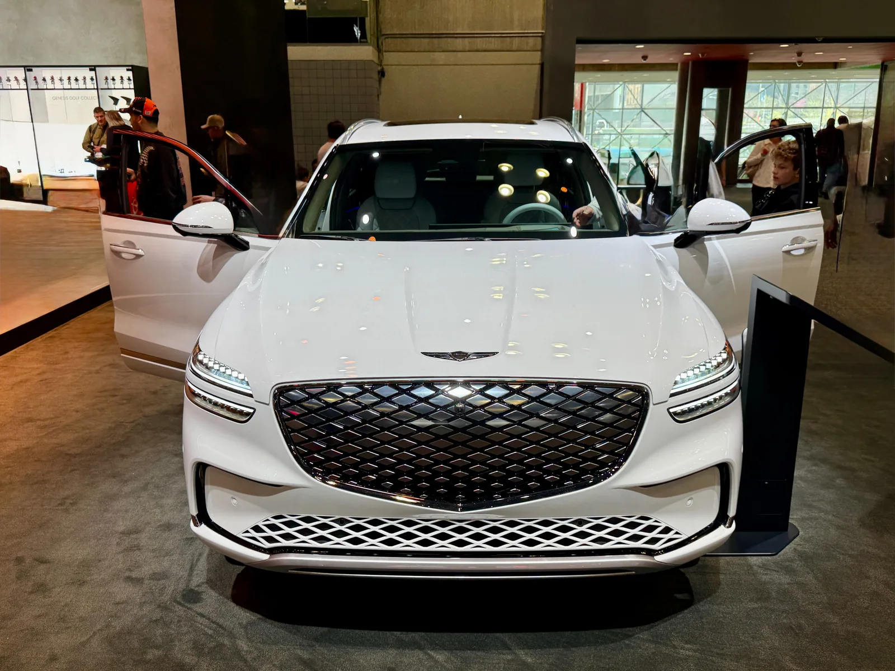
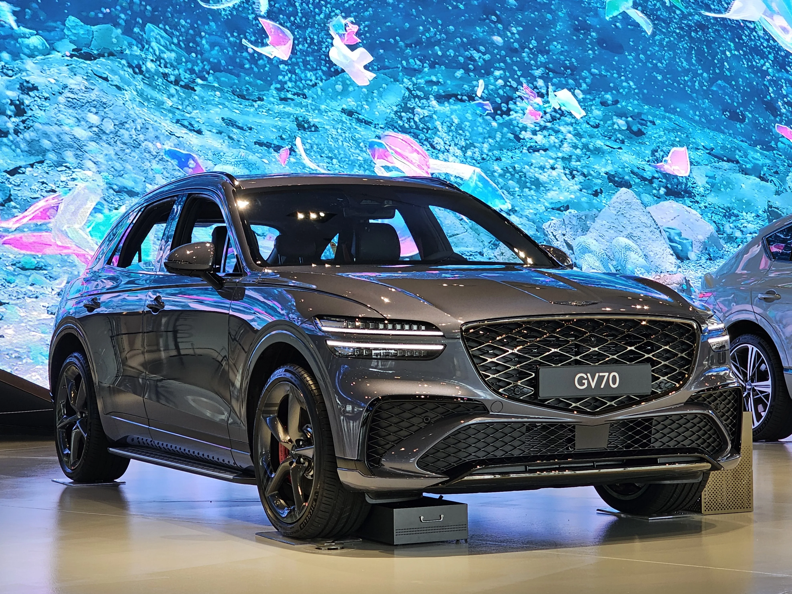

▲ 제네시스 GV70. 준중형 럭셔리 SUV 판매 볼륨을 책임지는 모델로 2026년형은 가솔린과 전동화 라인업을 함께 운영한다 ⓒ 제네시스
제네시스 GV70은 브랜드 SUV 라인업 중 가장 많이 팔리는 볼륨 모델이다. 가솔린 2.5·3.5 터보에 전동화 모델까지 더해 선택지가 넓어졌고, 오너 만족도도 대체로 높은 편이다. 다만 커뮤니티에 쌓인 오너 후기를 살펴보면 수납공간 부족 등 반복적으로 지적되는 아쉬운 점도 있다. 가격표와 오너 후기, 형제 모델 GV80과의 포지셔닝 차이를 종합해 GV70의 실제 상품성을 짚어봤다.
1. 가격 — 2.5 터보 5,393만 원부터 전동화까지

▲ 모터쇼에 전시된 제네시스 GV70. 가솔린 2.5·3.5 터보에 전동화 모델까지 갖춘 폭넓은 라인업이 특징이다 ⓒ Oleg Yunakov(Wikimedia Commons, CC BY-SA 4.0)
2026년형 GV70은 가솔린 2.5 터보와 3.5 터보 두 파워트레인에 각각 2WD·AWD, 스포츠 패키지 여부로 세분화된다. 여기에 84.0kWh 배터리를 얹은 전동화(Electrified) 모델이 최상단에 자리한다. 최신 가격과 옵션 구성은 제네시스 공식 홈페이지에서 확인 가능하다.
| 파워트레인 | 구동방식 | 가격(2026년형, 개소세 인하 반영) |
|---|---|---|
| 2.5 터보 | 2WD | 5,393만 원 |
| 2.5 터보 | AWD | 5,693만 원 |
| 2.5 터보 스포츠 패키지 | 2WD | 5,673만 원 |
| 3.5 터보 | 2WD | 5,943만 원 |
| 3.5 터보 | AWD | 6,243만 원 |
| Electrified GV70(19인치) | AWD | 7,580만 원 |
| Electrified GV70(20인치) | AWD | 7,656만 원 |
전동화 모델은 320kW 듀얼모터 AWD와 697V 배터리 시스템, 부스트모드까지 지원한다. 주행거리는 19인치 휠 기준 복합 423km, 20인치는 400km로 휠 크기에 따라 차이가 난다.

▲ 스포츠 패키지가 적용된 GV70. 전용 프론트·리어 범퍼와 듀얼 싱글 머플러로 차별화된다 ⓒ Damian B Oh(Wikimedia Commons, CC BY-SA 4.0)
2. 판매 볼륨 모델의 상품성 — 왜 많이 팔릴까

▲ 매트 블루 색상의 GV70. 준중형 SUV 체급으로 주차와 일상 운용이 상대적으로 수월하다는 평가가 많다 ⓒ 제네시스
GV70은 준중형 럭셔리 SUV 체급으로, 대형 SUV인 GV80보다 다루기 쉬운 크기가 볼륨 모델로 자리잡은 핵심 이유로 꼽힌다. 3.5 터보 모델은 여유 있는 출력으로 안정적인 거동을 보여준다는 평가가 많고, 스포츠 패키지를 더하면 서스펜션 세팅과 휠 디자인까지 한층 다듬어진다. 가격 구간이 5천만 원대부터 시작한다는 점도 상대적으로 진입장벽을 낮추는 요인이다.
3. 오너들이 꼽는 장단점 — "공간은 좋은데 수납이 없다"

▲ GV70 일렉트리파이드 실내. 크림 톤 마감이 고급스럽다는 평가가 많지만, 수납공간 부족은 오너들이 공통으로 지적하는 부분이다 ⓒ 제네시스
클리앙 등 커뮤니티에 올라온 장기 오너 후기를 종합하면, 가장 많이 언급되는 강점은 공간에 대한 만족도다. GV80 대비 폭 차이(65mm)는 크지 않지만 전장·축거가 200mm가량 짧아 주차가 한결 수월하다는 의견이 많다. 3.5 터보 모델은 여유 있는 파워트레인 덕분에 고속 주행에서도 안정적이라는 평가다. 반면 반복적으로 지적되는 단점은 수납공간 부족이다. GV80처럼 공조기 버튼 아래에 무선충전 겸용의 넓은 수납공간이 마련돼 있지 않아, 지갑이나 스마트폰을 둘 자리가 마땅치 않다는 후기가 여러 건 확인된다. 감속 시 시속 20km 전후에서 엔진브레이크가 걸리는 듯한 느낌이 있다는 의견도 일부 있었다.
알아두면 좋은 정보
수납공간 부족은 2WD·AWD, 가솔린·전동화 트림을 가리지 않고 공통으로 언급되는 지적이다. 센터 콘솔 구성은 실차 확인 후 구매를 결정하는 게 좋다.

▲ 가솔린 GV70 실내. 하바나 브라운 투톤 마감을 적용한 시그니처 디자인 셀렉션 사양이다 ⓒ Damian B Oh(Wikimedia Commons, CC BY-SA 4.0)
4. GV80과의 포지셔닝 차이 — 한 체급 위와 아래

▲ GV70 후면. GENESIS 레터링과 GV70 배지가 선명하다 ⓒ 제네시스
GV70과 GV80을 함께 저울질하는 예비 구매자가 많은 만큼, 두 모델의 차이를 짚은 오너 후기도 꾸준히 올라온다. 종합하면 2열 거주성과 트렁크 공간은 GV80이 확실히 우위이며, 소재나 인테리어 가죽 적용 범위 등 고급감에서도 GV80이 한 체급 위로 느껴진다는 평가가 많다. 반면 1열 승차감 자체는 두 모델이 비슷한 수준이고, 시야 차이 정도만 체감된다는 의견이다. 결국 대가족·장거리 위주라면 GV80, 일상 운용성과 상대적으로 낮은 진입장벽을 원한다면 GV70이 낫다는 게 커뮤니티의 대체적인 결론이다.
5. 정리
구매 체크포인트
- 가격은 2.5 터보 5,393만 원부터 시작하며, 전동화 모델은 7,580만 원대부터다.
- 공간 만족도는 높지만 수납공간 부족은 구매 전 실차로 확인하는 게 좋다.
- GV80 대비 주차·일상 운용은 GV70, 2열 거주성·고급감은 GV80이 앞선다는 평가가 우세하다.
- 전동화 모델은 19인치 기준 복합 423km 주행거리를 확보했다.